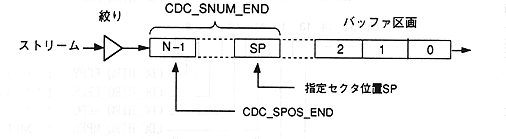

Title | Data | Data Name | No |
constant name | description |
|---|---|
CDC_SPOS_END | Indicates the sector position at the end of the section. |
CDC_SNUM_END | Indicates the number of sectors from the designated sector position SP to the end of the partition. |
Valid for the following functions for buffer partitions.
CDC_CalActSiz, CDC_GetSctInfo, CDC_ExeFadSearch, CDC_GetSctData CDC_DelSctData, CDC_GetdelSctData, CDC_CopySctData, CDC_MoveSctData

Caution When the number of sectors in the partition is 0, WAIT is always returned regardless of the specification. these Before executing the function, be sure to get the number of sectors in the buffer partition (CDC_GetSctNum) Execute and confirm that the number of sectors is not 0.
constant name | description |
|---|---|
CDC_PARA_DFL | Specify the default value of the configuration parameter (0) |
CDC_PARA_NOCHG | Setting parameter unchanged (−1) |
CDC_NUL_SEL | Special value of selector number (aperture number, buffer partition number) |
CDC_NUL_FID | Special value for file identifier |